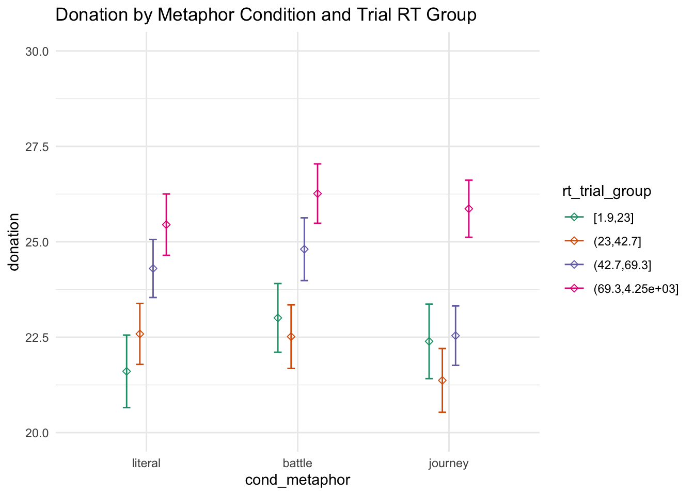
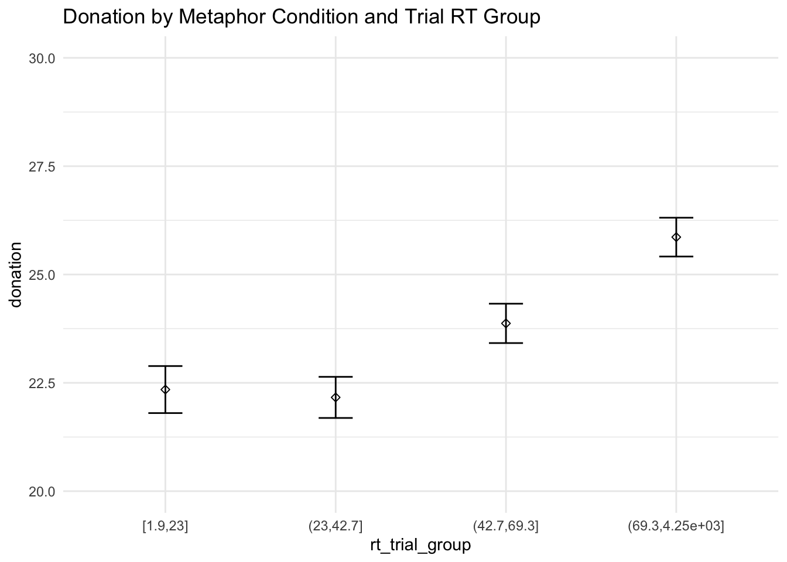
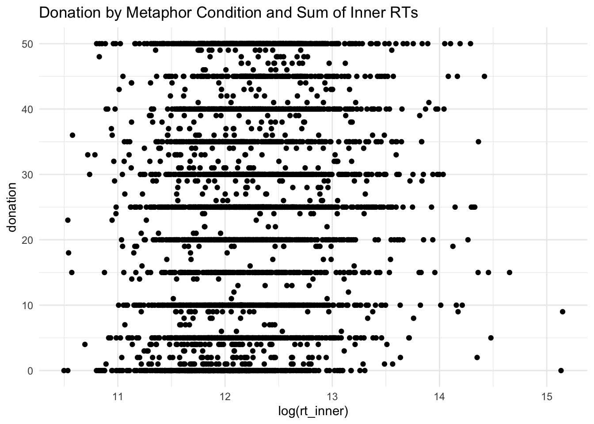
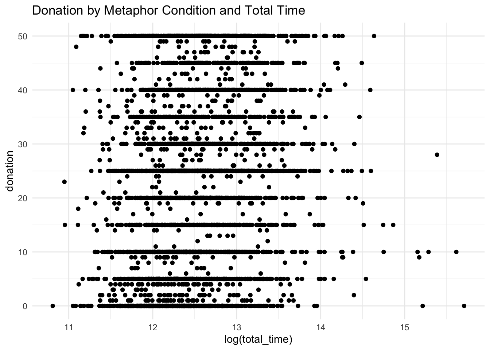

7 Response Times
Response time across several levels may be correlated with comprehension and survey quality, and here we explore this speculative relationship.
Create a time that represent the time they took reading the actual content of the experiment (everything minus the consent form, brief form, purpose question, and feedback question).
trials = trials %>%
mutate(rt_inner = rt_instructions + rt_trial + rt_description + rt_pastdonations + rt_urgent + rt_sympathy + rt_self_cancer + rt_ff_cancer + rt_demographic + rt_age)We’ll scale the continuous times for easier interpretation of the models.
trials$rt_trial_sc = trials$rt_trial / (2 * sd(trials$rt_trial))
trials$rt_inner_sc = trials$rt_inner / (2 * sd(trials$rt_inner))
trials$total_time_sc = trials$total_time / (2 * sd(trials$total_time))7.1 Main Stimulus Timing
7.1.1 Relationship with Metaphor Condition
trials %>%
ggplot(aes(cond_metaphor, fill = rt_trial_group)) + itheme +
stat_count(geom = "bar", position = position_dodge(width = 0.8), width = 0.75)model_bj_metaphor_base <- glm(update(base.formula, cond_metaphor ~ . ),
data = trials %>% filter(cond_metaphor != "literal"),
family = "binomial")
model_bj_metaphor_full <- glm(update(base.formula, cond_metaphor ~ . + rt_trial_group),
data = trials %>% filter(cond_metaphor != "literal"),
family = "binomial")
model_lj_metaphor_base <- glm(update(base.formula, cond_metaphor ~ . ),
data = trials %>% filter(cond_metaphor != "battle"),
family = "binomial")
model_lj_metaphor_full <- glm(update(base.formula, cond_metaphor ~ . + rt_trial_group),
data = trials %>% filter(cond_metaphor != "battle"),
family = "binomial")
model_lb_metaphor_base <- glm(update(base.formula, cond_metaphor ~ . ),
data = trials %>% filter(cond_metaphor != "journey"),
family = "binomial")
model_lb_metaphor_full <- glm(update(base.formula, cond_metaphor ~ . + rt_trial_group),
data = trials %>% filter(cond_metaphor != "journey"),
family = "binomial")
compare_lm(model_bj_metaphor_base, model_bj_metaphor_full)## Analysis of Deviance Table
##
## Model 1: cond_metaphor ~ cond_sex + self_cancer + ff_cancer + gender +
## education + socioeconomic + past_donations.z + age.z
## Model 2: cond_metaphor ~ cond_sex + self_cancer + ff_cancer + gender +
## education + socioeconomic + past_donations.z + age.z + rt_trial_group
## Resid. Df Resid. Dev Df Deviance Pr(>Chi)
## 1 2998 4166.8
## 2 2995 4159.0 3 7.7774 0.05084 .
## ---
## Signif. codes: 0 '***' 0.001 '**' 0.01 '*' 0.05 '.' 0.1 ' ' 1
## [1] Chisq Stat: 7.777## Warning in if (cls == c("lm") | cls == c("glm", "lm")) {: the condition has
## length > 1 and only the first element will be used## MODEL INFO:
## Observations: 3023
## Dependent Variable: cond_metaphor
## Type: Generalized linear model
## Family: binomial
## Link function: logit
##
## MODEL FIT:
## χ²(27) = 31.719, p = 0.243
## Pseudo-R² (Cragg-Uhler) = 0.014
## Pseudo-R² (McFadden) = 0.008
## AIC = 4215.041, BIC = 4383.433
##
## Standard errors: MLE
## -------------------------------------------------------------------------------
## Est. 2.5% 97.5% z val. p
## ----------------------------------- -------- -------- -------- -------- -------
## (Intercept) -0.007 -1.007 0.993 -0.014 0.989
## cond_sexfemale 0.102 -0.042 0.247 1.393 0.164
## self_cancerY 0.274 -0.068 0.616 1.569 0.117
## self_cancerOO -0.281 -1.054 0.493 -0.711 0.477
## ff_cancerY 0.101 -0.057 0.258 1.256 0.209
## ff_cancerOO 0.040 -0.482 0.563 0.152 0.879
## genderF -0.073 -0.221 0.075 -0.963 0.336
## genderNB 0.477 -0.572 1.525 0.891 0.373
## genderOO 0.100 -1.183 1.384 0.153 0.878
## educationHS -0.481 -1.465 0.503 -0.958 0.338
## educationA -0.544 -1.542 0.454 -1.068 0.286
## educationB -0.352 -1.334 0.630 -0.702 0.483
## educationM -0.337 -1.334 0.661 -0.661 0.508
## educationP -0.333 -1.415 0.748 -0.604 0.546
## educationD -0.333 -1.439 0.773 -0.590 0.555
## educationOO -0.872 -2.357 0.613 -1.151 0.250
## socioeconomic10-25k 0.169 -0.103 0.440 1.219 0.223
## socioeconomic25-50k 0.109 -0.140 0.358 0.858 0.391
## socioeconomic50-75k 0.141 -0.124 0.405 1.044 0.296
## socioeconomic75-100k 0.005 -0.298 0.308 0.032 0.974
## socioeconomic100-150k 0.179 -0.173 0.531 0.997 0.319
## socioeconomic>150k 0.609 0.120 1.098 2.443 0.015
## socioeconomicOO -0.120 -0.598 0.359 -0.491 0.623
## past_donations.z 0.002 -0.133 0.137 0.033 0.974
## age.z -0.270 -0.531 -0.010 -2.035 0.042
## rt_trial_group(23,42.7] 0.169 -0.047 0.384 1.533 0.125
## rt_trial_group(42.7,69.3] 0.276 0.057 0.494 2.471 0.013
## rt_trial_group(69.3,4.25e+03] 0.278 0.058 0.499 2.472 0.013
## -------------------------------------------------------------------------------compare_lm(model_lj_metaphor_base, model_lj_metaphor_full)## Analysis of Deviance Table
##
## Model 1: cond_metaphor ~ cond_sex + self_cancer + ff_cancer + gender +
## education + socioeconomic + past_donations.z + age.z
## Model 2: cond_metaphor ~ cond_sex + self_cancer + ff_cancer + gender +
## education + socioeconomic + past_donations.z + age.z + rt_trial_group
## Resid. Df Resid. Dev Df Deviance Pr(>Chi)
## 1 3046 4235.1
## 2 3043 4230.6 3 4.4641 0.2155
## [1] Chisq Stat: 4.464compare_lm(model_lb_metaphor_base, model_lb_metaphor_full)## Analysis of Deviance Table
##
## Model 1: cond_metaphor ~ cond_sex + self_cancer + ff_cancer + gender +
## education + socioeconomic + past_donations.z + age.z
## Model 2: cond_metaphor ~ cond_sex + self_cancer + ff_cancer + gender +
## education + socioeconomic + past_donations.z + age.z + rt_trial_group
## Resid. Df Resid. Dev Df Deviance Pr(>Chi)
## 1 3051 4247.1
## 2 3048 4242.2 3 4.9461 0.1758
## [1] Chisq Stat: 4.946The amount of time one takes to answer the main stimulus response signficantly predicts whether the condition was battle or journey, with the longer amount of time taken, the more likely the condition is battle.
The main stimulus response time does not predict whether the participant was in the journey or the literal condition, or the battle or the literal condition.
trials %>%
ggplot(aes(cond_metaphor, donation, color = rt_trial_group)) + itheme +
geom_errorbars +
coord_cartesian(ylim = c(20, 30)) +
labs(title = "Donation by Metaphor Condition and Trial RT Group")
model_metaphor_trial_group_base <- lm(update(base.formula, donation ~ . + cond_metaphor),
data = trials)
model_metaphor_trial_group_mid <- lm(update(base.formula, donation ~ . + cond_metaphor + rt_trial_group),
data = trials)
model_metaphor_trial_group_full <- lm(update(base.formula, donation ~ . + cond_metaphor * rt_trial_group),
data = trials)
compare_lm(model_metaphor_trial_group_base, model_metaphor_trial_group_mid)## Analysis of Variance Table
##
## Model 1: donation ~ cond_sex + self_cancer + ff_cancer + gender + education +
## socioeconomic + past_donations.z + age.z + cond_metaphor
## Model 2: donation ~ cond_sex + self_cancer + ff_cancer + gender + education +
## socioeconomic + past_donations.z + age.z + cond_metaphor +
## rt_trial_group
## Res.Df RSS Df Sum of Sq Pr(>Chi)
## 1 4558 1171827
## 2 4555 1160776 3 11051 2.057e-09 ***
## ---
## Signif. codes: 0 '***' 0.001 '**' 0.01 '*' 0.05 '.' 0.1 ' ' 1
## [1] Chisq Stat: 43.446## Warning in if (cls == c("lm") | cls == c("glm", "lm")) {: the condition has
## length > 1 and only the first element will be used## MODEL INFO:
## Observations: 4585
## Dependent Variable: donation
## Type: OLS linear regression
##
## MODEL FIT:
## F(29,4555) = 5.451, p = 0.000
## R² = 0.034
## Adj. R² = 0.027
##
## Standard errors: OLS
## --------------------------------------------------------------------------------
## Est. 2.5% 97.5% t val. p
## ----------------------------------- -------- --------- -------- -------- -------
## (Intercept) 21.915 15.566 28.265 6.767 0.000
## cond_sexfemale -0.445 -1.373 0.483 -0.941 0.347
## self_cancerY 5.233 3.002 7.463 4.600 0.000
## self_cancerOO 5.089 0.223 9.955 2.050 0.040
## ff_cancerY 1.663 0.659 2.666 3.248 0.001
## ff_cancerOO 3.996 0.462 7.530 2.217 0.027
## genderF 0.771 -0.179 1.721 1.591 0.112
## genderNB 2.620 -3.699 8.939 0.813 0.416
## genderOO -5.768 -14.642 3.105 -1.274 0.203
## educationHS -3.066 -9.309 3.176 -0.963 0.336
## educationA -3.203 -9.533 3.128 -0.992 0.321
## educationB -1.433 -7.660 4.794 -0.451 0.652
## educationM 0.201 -6.124 6.527 0.062 0.950
## educationP -1.084 -7.912 5.744 -0.311 0.756
## educationD -2.345 -9.399 4.708 -0.652 0.514
## educationOO -3.671 -13.512 6.170 -0.731 0.465
## socioeconomic10-25k -1.189 -2.942 0.564 -1.330 0.184
## socioeconomic25-50k -0.005 -1.595 1.585 -0.006 0.995
## socioeconomic50-75k 1.147 -0.543 2.836 1.331 0.183
## socioeconomic75-100k 1.834 -0.109 3.777 1.851 0.064
## socioeconomic100-150k 1.063 -1.175 3.302 0.931 0.352
## socioeconomic>150k 1.810 -1.338 4.959 1.127 0.260
## socioeconomicOO -2.355 -5.521 0.810 -1.459 0.145
## past_donations.z 1.121 0.193 2.049 2.368 0.018
## age.z -0.033 -0.989 0.922 -0.069 0.945
## cond_metaphorbattle 0.713 -0.418 1.845 1.236 0.216
## cond_metaphorjourney -0.597 -1.730 0.536 -1.034 0.301
## rt_trial_group(23,42.7] 0.124 -1.260 1.508 0.176 0.860
## rt_trial_group(42.7,69.3] 1.785 0.394 3.176 2.515 0.012
## rt_trial_group(69.3,4.25e+03] 3.921 2.516 5.327 5.469 0.000
## --------------------------------------------------------------------------------compare_lm(model_metaphor_trial_group_mid, model_metaphor_trial_group_full)## Analysis of Variance Table
##
## Model 1: donation ~ cond_sex + self_cancer + ff_cancer + gender + education +
## socioeconomic + past_donations.z + age.z + cond_metaphor +
## rt_trial_group
## Model 2: donation ~ cond_sex + self_cancer + ff_cancer + gender + education +
## socioeconomic + past_donations.z + age.z + cond_metaphor +
## rt_trial_group + cond_metaphor:rt_trial_group
## Res.Df RSS Df Sum of Sq Pr(>Chi)
## 1 4555 1160776
## 2 4549 1159808 6 968.03 0.7041
## [1] Chisq Stat: 3.825There is a main effect of main trial response time on donation amount, with participants who responded between 42.7 and 69.3 secs donating $2.13 more than baseline, and participants who responded slower than 69.3 secs donating on average $4.29 more than baseline.
There was no interaction between the metaphor condition and response time on the main trial which affected donations.
7.1.2 Continuous RT
trials %>%
ggplot(aes(log(rt_trial_sc), donation)) + itheme +
geom_point() +
labs(title = "Donation by Metaphor Condition and Trial RT")model_trial_base <- lm(update(base.formula, donation ~ .),
data = trials)
model_trial_full <- lm(update(base.formula, donation ~ . + rt_trial_sc),
data = trials)
model_trial_full_log <- lm(update(base.formula, donation ~ . + log(rt_trial_sc)),
data = trials)
model_trial_full_poly <- lm(update(base.formula, donation ~ . + rt_trial_sc + I(rt_trial_sc^2)),
data = trials)
model_trial_full_poly_log <- lm(update(base.formula, donation ~ . + log(rt_trial_sc) + I(log(rt_trial_sc)^2)),
data = trials)
compare_lm(model_trial_base, model_trial_full)## Analysis of Variance Table
##
## Model 1: donation ~ cond_sex + self_cancer + ff_cancer + gender + education +
## socioeconomic + past_donations.z + age.z
## Model 2: donation ~ cond_sex + self_cancer + ff_cancer + gender + education +
## socioeconomic + past_donations.z + age.z + rt_trial_sc
## Res.Df RSS Df Sum of Sq Pr(>Chi)
## 1 4560 1172938
## 2 4559 1171845 1 1092.7 0.03923 *
## ---
## Signif. codes: 0 '***' 0.001 '**' 0.01 '*' 0.05 '.' 0.1 ' ' 1
## [1] Chisq Stat: 4.273## Warning in if (cls == c("lm") | cls == c("glm", "lm")) {: the condition has
## length > 1 and only the first element will be used## MODEL INFO:
## Observations: 4585
## Dependent Variable: donation
## Type: OLS linear regression
##
## MODEL FIT:
## F(25,4559) = 4.546, p = 0.000
## R² = 0.024
## Adj. R² = 0.019
##
## Standard errors: OLS
## ------------------------------------------------------------------------
## Est. 2.5% 97.5% t val. p
## --------------------------- -------- --------- -------- -------- -------
## (Intercept) 23.005 16.719 29.292 7.174 0.000
## cond_sexfemale -0.439 -1.370 0.492 -0.924 0.355
## self_cancerY 4.827 2.593 7.061 4.236 0.000
## self_cancerOO 5.044 0.162 9.927 2.025 0.043
## ff_cancerY 1.892 0.889 2.895 3.698 0.000
## ff_cancerOO 3.853 0.306 7.400 2.130 0.033
## genderF 0.985 0.035 1.935 2.033 0.042
## genderNB 2.490 -3.856 8.835 0.769 0.442
## genderOO -5.761 -14.670 3.148 -1.268 0.205
## educationHS -3.061 -9.327 3.206 -0.958 0.338
## educationA -3.079 -9.433 3.276 -0.950 0.342
## educationB -1.586 -7.837 4.665 -0.498 0.619
## educationM 0.064 -6.287 6.414 0.020 0.984
## educationP -1.250 -8.106 5.605 -0.358 0.721
## educationD -2.454 -9.534 4.627 -0.679 0.497
## educationOO -3.089 -12.969 6.792 -0.613 0.540
## socioeconomic10-25k -1.054 -2.813 0.705 -1.175 0.240
## socioeconomic25-50k 0.052 -1.544 1.648 0.064 0.949
## socioeconomic50-75k 1.066 -0.630 2.762 1.232 0.218
## socioeconomic75-100k 1.910 -0.040 3.861 1.920 0.055
## socioeconomic100-150k 0.956 -1.290 3.203 0.835 0.404
## socioeconomic>150k 1.660 -1.499 4.819 1.030 0.303
## socioeconomicOO -2.182 -5.361 0.996 -1.346 0.178
## past_donations.z 1.091 0.160 2.022 2.297 0.022
## age.z 0.358 -0.593 1.310 0.739 0.460
## rt_trial_sc 0.980 0.048 1.912 2.062 0.039
## ------------------------------------------------------------------------compare_lm(model_trial_base, model_trial_full_log)## Analysis of Variance Table
##
## Model 1: donation ~ cond_sex + self_cancer + ff_cancer + gender + education +
## socioeconomic + past_donations.z + age.z
## Model 2: donation ~ cond_sex + self_cancer + ff_cancer + gender + education +
## socioeconomic + past_donations.z + age.z + log(rt_trial_sc)
## Res.Df RSS Df Sum of Sq Pr(>Chi)
## 1 4560 1172938
## 2 4559 1164526 1 8411.7 9.549e-09 ***
## ---
## Signif. codes: 0 '***' 0.001 '**' 0.01 '*' 0.05 '.' 0.1 ' ' 1
## [1] Chisq Stat: 33## Warning in if (cls == c("lm") | cls == c("glm", "lm")) {: the condition has
## length > 1 and only the first element will be used## MODEL INFO:
## Observations: 4585
## Dependent Variable: donation
## Type: OLS linear regression
##
## MODEL FIT:
## F(25,4559) = 5.720, p = 0.000
## R² = 0.030
## Adj. R² = 0.025
##
## Standard errors: OLS
## ------------------------------------------------------------------------
## Est. 2.5% 97.5% t val. p
## --------------------------- -------- --------- -------- -------- -------
## (Intercept) 25.890 19.576 32.203 8.039 0.000
## cond_sexfemale -0.466 -1.395 0.462 -0.985 0.325
## self_cancerY 5.272 3.039 7.505 4.629 0.000
## self_cancerOO 5.408 0.539 10.277 2.177 0.030
## ff_cancerY 1.685 0.684 2.687 3.299 0.001
## ff_cancerOO 3.966 0.430 7.502 2.199 0.028
## genderF 0.770 -0.180 1.720 1.590 0.112
## genderNB 2.512 -3.814 8.838 0.778 0.436
## genderOO -5.967 -14.848 2.914 -1.317 0.188
## educationHS -2.966 -9.213 3.281 -0.931 0.352
## educationA -3.042 -9.376 3.293 -0.941 0.347
## educationB -1.376 -7.607 4.856 -0.433 0.665
## educationM 0.274 -6.057 6.605 0.085 0.932
## educationP -0.952 -7.787 5.883 -0.273 0.785
## educationD -2.357 -9.415 4.701 -0.655 0.513
## educationOO -3.183 -13.033 6.666 -0.634 0.526
## socioeconomic10-25k -1.183 -2.936 0.571 -1.322 0.186
## socioeconomic25-50k -0.020 -1.611 1.570 -0.025 0.980
## socioeconomic50-75k 1.122 -0.568 2.813 1.302 0.193
## socioeconomic75-100k 1.854 -0.090 3.799 1.869 0.062
## socioeconomic100-150k 1.035 -1.203 3.274 0.907 0.365
## socioeconomic>150k 1.629 -1.520 4.778 1.014 0.311
## socioeconomicOO -2.367 -5.536 0.803 -1.464 0.143
## past_donations.z 1.177 0.248 2.106 2.483 0.013
## age.z 0.086 -0.868 1.039 0.176 0.860
## log(rt_trial_sc) 1.773 1.167 2.379 5.739 0.000
## ------------------------------------------------------------------------compare_lm(model_trial_full, model_trial_full_poly)## Analysis of Variance Table
##
## Model 1: donation ~ cond_sex + self_cancer + ff_cancer + gender + education +
## socioeconomic + past_donations.z + age.z + rt_trial_sc
## Model 2: donation ~ cond_sex + self_cancer + ff_cancer + gender + education +
## socioeconomic + past_donations.z + age.z + rt_trial_sc +
## I(rt_trial_sc^2)
## Res.Df RSS Df Sum of Sq Pr(>Chi)
## 1 4559 1171845
## 2 4558 1167406 1 4438.8 3.14e-05 ***
## ---
## Signif. codes: 0 '***' 0.001 '**' 0.01 '*' 0.05 '.' 0.1 ' ' 1
## [1] Chisq Stat: 17.4## Warning in if (cls == c("lm") | cls == c("glm", "lm")) {: the condition has
## length > 1 and only the first element will be used## MODEL INFO:
## Observations: 4585
## Dependent Variable: donation
## Type: OLS linear regression
##
## MODEL FIT:
## F(26,4558) = 5.053, p = 0.000
## R² = 0.028
## Adj. R² = 0.022
##
## Standard errors: OLS
## ------------------------------------------------------------------------
## Est. 2.5% 97.5% t val. p
## --------------------------- -------- --------- -------- -------- -------
## (Intercept) 22.102 15.812 28.392 6.889 0.000
## cond_sexfemale -0.393 -1.323 0.537 -0.829 0.407
## self_cancerY 4.973 2.742 7.204 4.371 0.000
## self_cancerOO 5.107 0.233 9.981 2.054 0.040
## ff_cancerY 1.865 0.864 2.867 3.652 0.000
## ff_cancerOO 3.935 0.394 7.475 2.179 0.029
## genderF 0.912 -0.036 1.861 1.886 0.059
## genderNB 2.596 -3.739 8.930 0.803 0.422
## genderOO -5.928 -14.821 2.965 -1.307 0.191
## educationHS -2.934 -9.189 3.322 -0.919 0.358
## educationA -2.991 -9.334 3.352 -0.925 0.355
## educationB -1.385 -7.626 4.856 -0.435 0.663
## educationM 0.213 -6.127 6.552 0.066 0.948
## educationP -1.155 -7.998 5.689 -0.331 0.741
## educationD -2.257 -9.325 4.811 -0.626 0.531
## educationOO -2.945 -12.808 6.918 -0.585 0.558
## socioeconomic10-25k -1.140 -2.896 0.616 -1.273 0.203
## socioeconomic25-50k -0.023 -1.616 1.571 -0.028 0.978
## socioeconomic50-75k 1.040 -0.653 2.732 1.204 0.229
## socioeconomic75-100k 1.837 -0.111 3.785 1.849 0.064
## socioeconomic100-150k 1.104 -1.140 3.347 0.964 0.335
## socioeconomic>150k 1.679 -1.474 4.832 1.044 0.297
## socioeconomicOO -2.250 -5.423 0.923 -1.390 0.165
## past_donations.z 1.119 0.189 2.048 2.358 0.018
## age.z 0.249 -0.701 1.200 0.514 0.607
## rt_trial_sc 3.542 2.018 5.065 4.558 0.000
## I(rt_trial_sc^2) -0.234 -0.344 -0.124 -4.163 0.000
## ------------------------------------------------------------------------compare_lm(model_trial_full_log, model_trial_full_poly_log)## Analysis of Variance Table
##
## Model 1: donation ~ cond_sex + self_cancer + ff_cancer + gender + education +
## socioeconomic + past_donations.z + age.z + log(rt_trial_sc)
## Model 2: donation ~ cond_sex + self_cancer + ff_cancer + gender + education +
## socioeconomic + past_donations.z + age.z + log(rt_trial_sc) +
## I(log(rt_trial_sc)^2)
## Res.Df RSS Df Sum of Sq Pr(>Chi)
## 1 4559 1164526
## 2 4558 1164506 1 20.631 0.7763
## [1] Chisq Stat: 0.081A linear predictor of main trial stimulus RT significantly predicts the donation amount, and a predictor of the log of the main trial RT even moreso significantly predicts donations amounts. Compared to the scaled stimulus RT, a degree-2 polynomial nontransformed stimulus RT predictor makes a significant improvement in model fit.
There is not, however, an improvement for a polynomial model when the stimulus RT variables are log-transformed
7.1.3 Discretized RT
trials %>%
ggplot(aes(rt_trial_group, donation)) + itheme +
geom_errorbars +
coord_cartesian(ylim = c(20, 30)) +
labs(title = "Donation by Metaphor Condition and Trial RT Group")
Participants’ donations depend on the amount of time they took reading the main stimulus
model_trial_group_base <- lm(update(base.formula, donation ~ .),
data = trials)
model_trial_group_full <- lm(update(base.formula, donation ~ . + rt_trial_group),
data = trials)
compare_lm(model_trial_group_base, model_trial_group_full)## Analysis of Variance Table
##
## Model 1: donation ~ cond_sex + self_cancer + ff_cancer + gender + education +
## socioeconomic + past_donations.z + age.z
## Model 2: donation ~ cond_sex + self_cancer + ff_cancer + gender + education +
## socioeconomic + past_donations.z + age.z + rt_trial_group
## Res.Df RSS Df Sum of Sq Pr(>Chi)
## 1 4560 1172938
## 2 4557 1162069 3 10869 2.961e-09 ***
## ---
## Signif. codes: 0 '***' 0.001 '**' 0.01 '*' 0.05 '.' 0.1 ' ' 1
## [1] Chisq Stat: 42.685## Warning in if (cls == c("lm") | cls == c("glm", "lm")) {: the condition has
## length > 1 and only the first element will be used## MODEL INFO:
## Observations: 4585
## Dependent Variable: donation
## Type: OLS linear regression
##
## MODEL FIT:
## F(27,4557) = 5.662, p = 0.000
## R² = 0.032
## Adj. R² = 0.027
##
## Standard errors: OLS
## --------------------------------------------------------------------------------
## Est. 2.5% 97.5% t val. p
## ----------------------------------- -------- --------- -------- -------- -------
## (Intercept) 21.943 15.621 28.265 6.804 0.000
## cond_sexfemale -0.466 -1.394 0.462 -0.985 0.325
## self_cancerY 5.180 2.950 7.410 4.553 0.000
## self_cancerOO 5.147 0.280 10.015 2.073 0.038
## ff_cancerY 1.645 0.641 2.648 3.213 0.001
## ff_cancerOO 4.001 0.468 7.534 2.220 0.026
## genderF 0.788 -0.163 1.738 1.625 0.104
## genderNB 2.532 -3.789 8.853 0.785 0.432
## genderOO -5.822 -14.698 3.055 -1.286 0.199
## educationHS -2.963 -9.207 3.280 -0.930 0.352
## educationA -3.085 -9.417 3.246 -0.955 0.339
## educationB -1.360 -7.589 4.869 -0.428 0.669
## educationM 0.274 -6.053 6.601 0.085 0.932
## educationP -1.016 -7.846 5.814 -0.292 0.771
## educationD -2.274 -9.329 4.782 -0.632 0.528
## educationOO -3.459 -13.302 6.383 -0.689 0.491
## socioeconomic10-25k -1.218 -2.972 0.535 -1.363 0.173
## socioeconomic25-50k -0.021 -1.612 1.569 -0.026 0.979
## socioeconomic50-75k 1.122 -0.567 2.812 1.302 0.193
## socioeconomic75-100k 1.841 -0.102 3.785 1.857 0.063
## socioeconomic100-150k 1.033 -1.206 3.272 0.904 0.366
## socioeconomic>150k 1.682 -1.464 4.828 1.048 0.295
## socioeconomicOO -2.326 -5.492 0.841 -1.440 0.150
## past_donations.z 1.119 0.191 2.047 2.364 0.018
## age.z -0.015 -0.970 0.940 -0.030 0.976
## rt_trial_group(23,42.7] 0.088 -1.296 1.472 0.124 0.901
## rt_trial_group(42.7,69.3] 1.729 0.338 3.120 2.437 0.015
## rt_trial_group(69.3,4.25e+03] 3.869 2.464 5.274 5.397 0.000
## --------------------------------------------------------------------------------7.2 Experiment Content Timing
Participants’ donations depend on the amount of time they took reading the actual content of the experiment (everything minus the consent form, brief form, purpose question, and feedback question).
trials %>%
ggplot(aes(log(rt_inner), donation)) + itheme +
geom_point() +
labs(title = "Donation by Metaphor Condition and Sum of Inner RTs")
model_inner_base <- lm(update(base.formula, donation ~ .),
data = trials)
model_inner_full <- lm(update(base.formula, donation ~ . + rt_inner),
data = trials)
model_inner_full_log <- lm(update(base.formula, donation ~ . + log(rt_inner)),
data = trials)
model_inner_full_poly <- lm(update(base.formula, donation ~ . + rt_inner + I(rt_inner^2)),
data = trials)
model_inner_full_poly_log <- lm(update(base.formula, donation ~ . + log(rt_inner) + I(log(rt_inner)^2)),
data = trials)
compare_lm(model_inner_base, model_inner_full)## Analysis of Variance Table
##
## Model 1: donation ~ cond_sex + self_cancer + ff_cancer + gender + education +
## socioeconomic + past_donations.z + age.z
## Model 2: donation ~ cond_sex + self_cancer + ff_cancer + gender + education +
## socioeconomic + past_donations.z + age.z + rt_inner
## Res.Df RSS Df Sum of Sq Pr(>Chi)
## 1 4560 1172938
## 2 4559 1160895 1 12043 6.11e-12 ***
## ---
## Signif. codes: 0 '***' 0.001 '**' 0.01 '*' 0.05 '.' 0.1 ' ' 1
## [1] Chisq Stat: 47.319## Warning in if (cls == c("lm") | cls == c("glm", "lm")) {: the condition has
## length > 1 and only the first element will be used## MODEL INFO:
## Observations: 4585
## Dependent Variable: donation
## Type: OLS linear regression
##
## MODEL FIT:
## F(25,4559) = 6.309, p = 0.000
## R² = 0.033
## Adj. R² = 0.028
##
## Standard errors: OLS
## ------------------------------------------------------------------------
## Est. 2.5% 97.5% t val. p
## --------------------------- -------- --------- -------- -------- -------
## (Intercept) 20.871 14.584 27.159 6.508 0.000
## cond_sexfemale -0.466 -1.393 0.461 -0.986 0.324
## self_cancerY 4.797 2.575 7.020 4.232 0.000
## self_cancerOO 5.073 0.213 9.933 2.047 0.041
## ff_cancerY 2.106 1.106 3.106 4.127 0.000
## ff_cancerOO 4.006 0.475 7.536 2.224 0.026
## genderF 0.997 0.051 1.942 2.067 0.039
## genderNB 2.790 -3.527 9.107 0.866 0.387
## genderOO -6.078 -14.945 2.790 -1.344 0.179
## educationHS -2.646 -8.884 3.593 -0.831 0.406
## educationA -2.800 -9.125 3.525 -0.868 0.386
## educationB -1.285 -7.508 4.937 -0.405 0.686
## educationM 0.357 -5.964 6.679 0.111 0.912
## educationP -0.724 -7.550 6.101 -0.208 0.835
## educationD -2.157 -9.205 4.890 -0.600 0.548
## educationOO -2.811 -12.645 7.024 -0.560 0.575
## socioeconomic10-25k -1.216 -2.967 0.535 -1.362 0.173
## socioeconomic25-50k -0.062 -1.651 1.526 -0.077 0.939
## socioeconomic50-75k 1.041 -0.647 2.728 1.209 0.227
## socioeconomic75-100k 1.919 -0.023 3.860 1.938 0.053
## socioeconomic100-150k 0.985 -1.250 3.220 0.864 0.388
## socioeconomic>150k 1.759 -1.385 4.903 1.097 0.273
## socioeconomicOO -1.985 -5.149 1.179 -1.230 0.219
## past_donations.z 1.118 0.191 2.045 2.364 0.018
## age.z 0.158 -0.790 1.106 0.327 0.744
## rt_inner 0.000 0.000 0.000 6.877 0.000
## ------------------------------------------------------------------------compare_lm(model_inner_base, model_inner_full_log)## Analysis of Variance Table
##
## Model 1: donation ~ cond_sex + self_cancer + ff_cancer + gender + education +
## socioeconomic + past_donations.z + age.z
## Model 2: donation ~ cond_sex + self_cancer + ff_cancer + gender + education +
## socioeconomic + past_donations.z + age.z + log(rt_inner)
## Res.Df RSS Df Sum of Sq Pr(>Chi)
## 1 4560 1172938
## 2 4559 1143824 1 29114 < 2.2e-16 ***
## ---
## Signif. codes: 0 '***' 0.001 '**' 0.01 '*' 0.05 '.' 0.1 ' ' 1
## [1] Chisq Stat: 115.242## Warning in if (cls == c("lm") | cls == c("glm", "lm")) {: the condition has
## length > 1 and only the first element will be used## MODEL INFO:
## Observations: 4585
## Dependent Variable: donation
## Type: OLS linear regression
##
## MODEL FIT:
## F(25,4559) = 9.125, p = 0.000
## R² = 0.048
## Adj. R² = 0.042
##
## Standard errors: OLS
## --------------------------------------------------------------------------
## Est. 2.5% 97.5% t val. p
## --------------------------- --------- --------- --------- -------- -------
## (Intercept) -34.555 -46.790 -22.320 -5.537 0.000
## cond_sexfemale -0.499 -1.419 0.421 -1.063 0.288
## self_cancerY 5.077 2.870 7.283 4.510 0.000
## self_cancerOO 5.140 0.316 9.964 2.089 0.037
## ff_cancerY 1.990 0.999 2.981 3.936 0.000
## ff_cancerOO 4.168 0.664 7.673 2.332 0.020
## genderF 0.909 -0.029 1.848 1.900 0.058
## genderNB 2.944 -3.326 9.214 0.921 0.357
## genderOO -6.469 -15.272 2.333 -1.441 0.150
## educationHS -2.138 -8.331 4.056 -0.677 0.499
## educationA -2.360 -8.639 3.919 -0.737 0.461
## educationB -0.693 -6.871 5.485 -0.220 0.826
## educationM 0.946 -5.330 7.222 0.295 0.768
## educationP 0.060 -6.717 6.837 0.017 0.986
## educationD -1.453 -8.450 5.545 -0.407 0.684
## educationOO -2.616 -12.377 7.146 -0.525 0.599
## socioeconomic10-25k -1.321 -3.059 0.417 -1.490 0.136
## socioeconomic25-50k -0.198 -1.775 1.379 -0.246 0.805
## socioeconomic50-75k 1.135 -0.540 2.810 1.328 0.184
## socioeconomic75-100k 1.851 -0.076 3.778 1.883 0.060
## socioeconomic100-150k 1.213 -1.006 3.432 1.072 0.284
## socioeconomic>150k 1.999 -1.122 5.120 1.256 0.209
## socioeconomicOO -1.926 -5.066 1.215 -1.202 0.229
## past_donations.z 1.147 0.227 2.068 2.445 0.015
## age.z -0.269 -1.216 0.677 -0.558 0.577
## log(rt_inner) 4.674 3.823 5.525 10.772 0.000
## --------------------------------------------------------------------------compare_lm(model_inner_full, model_inner_full_poly)## Analysis of Variance Table
##
## Model 1: donation ~ cond_sex + self_cancer + ff_cancer + gender + education +
## socioeconomic + past_donations.z + age.z + rt_inner
## Model 2: donation ~ cond_sex + self_cancer + ff_cancer + gender + education +
## socioeconomic + past_donations.z + age.z + rt_inner + I(rt_inner^2)
## Res.Df RSS Df Sum of Sq Pr(>Chi)
## 1 4559 1160895
## 2 4558 1147061 1 13834 1.222e-13 ***
## ---
## Signif. codes: 0 '***' 0.001 '**' 0.01 '*' 0.05 '.' 0.1 ' ' 1
## [1] Chisq Stat: 54.968## Warning in if (cls == c("lm") | cls == c("glm", "lm")) {: the condition has
## length > 1 and only the first element will be used## MODEL INFO:
## Observations: 4585
## Dependent Variable: donation
## Type: OLS linear regression
##
## MODEL FIT:
## F(26,4558) = 8.252, p = 0.000
## R² = 0.045
## Adj. R² = 0.040
##
## Standard errors: OLS
## ------------------------------------------------------------------------
## Est. 2.5% 97.5% t val. p
## --------------------------- -------- --------- -------- -------- -------
## (Intercept) 18.111 11.818 24.404 5.642 0.000
## cond_sexfemale -0.442 -1.364 0.479 -0.941 0.347
## self_cancerY 4.909 2.700 7.119 4.356 0.000
## self_cancerOO 5.005 0.174 9.836 2.031 0.042
## ff_cancerY 2.051 1.056 3.046 4.043 0.000
## ff_cancerOO 4.065 0.556 7.575 2.271 0.023
## genderF 0.983 0.043 1.923 2.051 0.040
## genderNB 2.993 -3.287 9.273 0.934 0.350
## genderOO -6.401 -15.217 2.415 -1.423 0.155
## educationHS -2.157 -8.360 4.046 -0.682 0.496
## educationA -2.381 -8.670 3.908 -0.742 0.458
## educationB -0.776 -6.963 5.411 -0.246 0.806
## educationM 0.935 -5.351 7.221 0.292 0.771
## educationP -0.167 -6.953 6.620 -0.048 0.962
## educationD -1.497 -8.505 5.511 -0.419 0.675
## educationOO -2.507 -12.285 7.270 -0.503 0.615
## socioeconomic10-25k -1.232 -2.973 0.508 -1.388 0.165
## socioeconomic25-50k -0.219 -1.799 1.361 -0.272 0.786
## socioeconomic50-75k 1.044 -0.634 2.722 1.220 0.223
## socioeconomic75-100k 1.840 -0.090 3.770 1.869 0.062
## socioeconomic100-150k 1.242 -0.981 3.466 1.096 0.273
## socioeconomic>150k 1.922 -1.204 5.048 1.205 0.228
## socioeconomicOO -1.934 -5.080 1.211 -1.206 0.228
## past_donations.z 1.135 0.213 2.057 2.414 0.016
## age.z -0.089 -1.033 0.856 -0.184 0.854
## rt_inner 0.000 0.000 0.000 10.065 0.000
## I(rt_inner^2) -0.000 -0.000 -0.000 -7.414 0.000
## ------------------------------------------------------------------------compare_lm(model_inner_full_log, model_inner_full_poly_log)## Analysis of Variance Table
##
## Model 1: donation ~ cond_sex + self_cancer + ff_cancer + gender + education +
## socioeconomic + past_donations.z + age.z + log(rt_inner)
## Model 2: donation ~ cond_sex + self_cancer + ff_cancer + gender + education +
## socioeconomic + past_donations.z + age.z + log(rt_inner) +
## I(log(rt_inner)^2)
## Res.Df RSS Df Sum of Sq Pr(>Chi)
## 1 4559 1143824
## 2 4558 1140672 1 3151.8 0.0003869 ***
## ---
## Signif. codes: 0 '***' 0.001 '**' 0.01 '*' 0.05 '.' 0.1 ' ' 1
## [1] Chisq Stat: 12.651## Warning in if (cls == c("lm") | cls == c("glm", "lm")) {: the condition has
## length > 1 and only the first element will be used## MODEL INFO:
## Observations: 4585
## Dependent Variable: donation
## Type: OLS linear regression
##
## MODEL FIT:
## F(26,4558) = 9.280, p = 0.000
## R² = 0.050
## Adj. R² = 0.045
##
## Standard errors: OLS
## -----------------------------------------------------------------------------
## Est. 2.5% 97.5% t val. p
## --------------------------- ---------- ---------- ---------- -------- -------
## (Intercept) -285.424 -424.550 -146.299 -4.022 0.000
## cond_sexfemale -0.521 -1.440 0.398 -1.111 0.267
## self_cancerY 5.263 3.057 7.469 4.676 0.000
## self_cancerOO 5.225 0.407 10.043 2.126 0.034
## ff_cancerY 1.790 0.794 2.786 3.524 0.000
## ff_cancerOO 4.150 0.650 7.650 2.324 0.020
## genderF 0.838 -0.100 1.776 1.752 0.080
## genderNB 2.786 -3.477 9.048 0.872 0.383
## genderOO -6.514 -15.306 2.277 -1.453 0.146
## educationHS -2.174 -8.359 4.012 -0.689 0.491
## educationA -2.354 -8.626 3.917 -0.736 0.462
## educationB -0.619 -6.789 5.551 -0.197 0.844
## educationM 1.007 -5.262 7.275 0.315 0.753
## educationP 0.195 -6.574 6.964 0.056 0.955
## educationD -1.389 -8.378 5.600 -0.390 0.697
## educationOO -2.741 -12.491 7.009 -0.551 0.582
## socioeconomic10-25k -1.285 -3.021 0.451 -1.451 0.147
## socioeconomic25-50k -0.167 -1.742 1.408 -0.208 0.835
## socioeconomic50-75k 1.236 -0.438 2.910 1.447 0.148
## socioeconomic75-100k 1.838 -0.087 3.763 1.872 0.061
## socioeconomic100-150k 1.342 -0.876 3.559 1.186 0.236
## socioeconomic>150k 2.066 -1.052 5.183 1.299 0.194
## socioeconomicOO -1.965 -5.102 1.172 -1.228 0.219
## past_donations.z 1.149 0.230 2.068 2.451 0.014
## age.z -0.389 -1.337 0.558 -0.805 0.421
## log(rt_inner) 45.342 22.860 67.824 3.954 0.000
## I(log(rt_inner)^2) -1.644 -2.552 -0.736 -3.549 0.000
## -----------------------------------------------------------------------------7.3 Experiment Timing
Participants’ donations depend on the amount of time they took for the entire experiment.
trials %>%
ggplot(aes(log(total_time), donation)) + itheme +
geom_point() +
labs(title = "Donation by Metaphor Condition and Total Time")
model_entire_base <- lm(update(base.formula, donation ~ .),
data = trials)
model_entire_full <- lm(update(base.formula, donation ~ . + total_time),
data = trials)
model_entire_full_log <- lm(update(base.formula, donation ~ . + log(total_time)),
data = trials)
model_entire_full_poly <- lm(update(base.formula, donation ~ . + total_time + I(total_time^2)),
data = trials)
model_entire_full_poly_log <- lm(update(base.formula, donation ~ . + log(total_time) + I(log(total_time)^2)),
data = trials)
compare_lm(model_entire_base, model_entire_full)## Analysis of Variance Table
##
## Model 1: donation ~ cond_sex + self_cancer + ff_cancer + gender + education +
## socioeconomic + past_donations.z + age.z
## Model 2: donation ~ cond_sex + self_cancer + ff_cancer + gender + education +
## socioeconomic + past_donations.z + age.z + total_time
## Res.Df RSS Df Sum of Sq Pr(>Chi)
## 1 4560 1172938
## 2 4559 1163175 1 9762.7 6.178e-10 ***
## ---
## Signif. codes: 0 '***' 0.001 '**' 0.01 '*' 0.05 '.' 0.1 ' ' 1
## [1] Chisq Stat: 38.322## Warning in if (cls == c("lm") | cls == c("glm", "lm")) {: the condition has
## length > 1 and only the first element will be used## MODEL INFO:
## Observations: 4585
## Dependent Variable: donation
## Type: OLS linear regression
##
## MODEL FIT:
## F(25,4559) = 5.939, p = 0.000
## R² = 0.032
## Adj. R² = 0.026
##
## Standard errors: OLS
## ------------------------------------------------------------------------
## Est. 2.5% 97.5% t val. p
## --------------------------- -------- --------- -------- -------- -------
## (Intercept) 21.378 15.093 27.663 6.668 0.000
## cond_sexfemale -0.438 -1.365 0.490 -0.925 0.355
## self_cancerY 4.752 2.527 6.976 4.188 0.000
## self_cancerOO 4.906 0.041 9.770 1.977 0.048
## ff_cancerY 2.018 1.018 3.019 3.956 0.000
## ff_cancerOO 3.919 0.385 7.452 2.174 0.030
## genderF 0.940 -0.006 1.887 1.948 0.051
## genderNB 2.657 -3.666 8.979 0.824 0.410
## genderOO -5.933 -14.809 2.943 -1.311 0.190
## educationHS -2.738 -8.983 3.506 -0.860 0.390
## educationA -2.804 -9.135 3.528 -0.868 0.385
## educationB -1.341 -7.569 4.887 -0.422 0.673
## educationM 0.344 -5.984 6.672 0.107 0.915
## educationP -0.741 -7.574 6.091 -0.213 0.832
## educationD -2.222 -9.277 4.832 -0.618 0.537
## educationOO -2.801 -12.645 7.044 -0.558 0.577
## socioeconomic10-25k -1.170 -2.922 0.582 -1.309 0.191
## socioeconomic25-50k -0.060 -1.650 1.530 -0.074 0.941
## socioeconomic50-75k 1.075 -0.615 2.764 1.247 0.212
## socioeconomic75-100k 1.891 -0.053 3.834 1.907 0.057
## socioeconomic100-150k 0.839 -1.399 3.077 0.735 0.462
## socioeconomic>150k 1.758 -1.389 4.905 1.095 0.274
## socioeconomicOO -2.043 -5.210 1.124 -1.265 0.206
## past_donations.z 1.100 0.172 2.028 2.325 0.020
## age.z 0.245 -0.703 1.193 0.507 0.613
## total_time 0.000 0.000 0.000 6.186 0.000
## ------------------------------------------------------------------------compare_lm(model_entire_base, model_entire_full_log)## Analysis of Variance Table
##
## Model 1: donation ~ cond_sex + self_cancer + ff_cancer + gender + education +
## socioeconomic + past_donations.z + age.z
## Model 2: donation ~ cond_sex + self_cancer + ff_cancer + gender + education +
## socioeconomic + past_donations.z + age.z + log(total_time)
## Res.Df RSS Df Sum of Sq Pr(>Chi)
## 1 4560 1172938
## 2 4559 1134640 1 38298 < 2.2e-16 ***
## ---
## Signif. codes: 0 '***' 0.001 '**' 0.01 '*' 0.05 '.' 0.1 ' ' 1
## [1] Chisq Stat: 152.206## Warning in if (cls == c("lm") | cls == c("glm", "lm")) {: the condition has
## length > 1 and only the first element will be used## MODEL INFO:
## Observations: 4585
## Dependent Variable: donation
## Type: OLS linear regression
##
## MODEL FIT:
## F(25,4559) = 10.675, p = 0.000
## R² = 0.055
## Adj. R² = 0.050
##
## Standard errors: OLS
## --------------------------------------------------------------------------
## Est. 2.5% 97.5% t val. p
## --------------------------- --------- --------- --------- -------- -------
## (Intercept) -42.556 -54.671 -30.440 -6.886 0.000
## cond_sexfemale -0.494 -1.410 0.423 -1.056 0.291
## self_cancerY 4.862 2.665 7.059 4.338 0.000
## self_cancerOO 4.746 -0.058 9.551 1.937 0.053
## ff_cancerY 1.922 0.935 2.909 3.818 0.000
## ff_cancerOO 4.063 0.573 7.553 2.283 0.023
## genderF 0.826 -0.109 1.760 1.731 0.083
## genderNB 2.941 -3.304 9.185 0.923 0.356
## genderOO -6.456 -15.223 2.310 -1.444 0.149
## educationHS -2.050 -8.218 4.119 -0.651 0.515
## educationA -2.327 -8.580 3.927 -0.729 0.466
## educationB -0.669 -6.822 5.483 -0.213 0.831
## educationM 0.975 -5.275 7.226 0.306 0.760
## educationP 0.230 -6.520 6.980 0.067 0.947
## educationD -1.567 -8.535 5.401 -0.441 0.659
## educationOO -2.419 -12.142 7.304 -0.488 0.626
## socioeconomic10-25k -1.344 -3.075 0.387 -1.522 0.128
## socioeconomic25-50k -0.159 -1.729 1.412 -0.198 0.843
## socioeconomic50-75k 1.225 -0.443 2.894 1.440 0.150
## socioeconomic75-100k 1.830 -0.089 3.750 1.869 0.062
## socioeconomic100-150k 1.090 -1.120 3.300 0.967 0.334
## socioeconomic>150k 2.179 -0.930 5.288 1.374 0.170
## socioeconomicOO -1.955 -5.082 1.173 -1.225 0.221
## past_donations.z 1.116 0.199 2.032 2.387 0.017
## age.z -0.287 -1.228 0.654 -0.599 0.549
## log(total_time) 5.194 4.373 6.015 12.405 0.000
## --------------------------------------------------------------------------compare_lm(model_entire_full, model_entire_full_poly)## Analysis of Variance Table
##
## Model 1: donation ~ cond_sex + self_cancer + ff_cancer + gender + education +
## socioeconomic + past_donations.z + age.z + total_time
## Model 2: donation ~ cond_sex + self_cancer + ff_cancer + gender + education +
## socioeconomic + past_donations.z + age.z + total_time + I(total_time^2)
## Res.Df RSS Df Sum of Sq Pr(>Chi)
## 1 4559 1163175
## 2 4558 1142178 1 20997 < 2.2e-16 ***
## ---
## Signif. codes: 0 '***' 0.001 '**' 0.01 '*' 0.05 '.' 0.1 ' ' 1
## [1] Chisq Stat: 83.522## Warning in if (cls == c("lm") | cls == c("glm", "lm")) {: the condition has
## length > 1 and only the first element will be used## MODEL INFO:
## Observations: 4585
## Dependent Variable: donation
## Type: OLS linear regression
##
## MODEL FIT:
## F(26,4558) = 9.037, p = 0.000
## R² = 0.049
## Adj. R² = 0.044
##
## Standard errors: OLS
## ------------------------------------------------------------------------
## Est. 2.5% 97.5% t val. p
## --------------------------- -------- --------- -------- -------- -------
## (Intercept) 18.126 11.858 24.394 5.670 0.000
## cond_sexfemale -0.477 -1.396 0.443 -1.017 0.309
## self_cancerY 4.730 2.525 6.934 4.206 0.000
## self_cancerOO 4.695 -0.126 9.517 1.909 0.056
## ff_cancerY 2.025 1.033 3.016 4.004 0.000
## ff_cancerOO 3.959 0.457 7.460 2.216 0.027
## genderF 0.946 0.008 1.884 1.978 0.048
## genderNB 2.919 -3.348 9.185 0.913 0.361
## genderOO -6.212 -15.009 2.584 -1.385 0.166
## educationHS -2.089 -8.279 4.100 -0.662 0.508
## educationA -2.416 -8.691 3.859 -0.755 0.450
## educationB -0.827 -7.000 5.347 -0.263 0.793
## educationM 0.798 -5.473 7.070 0.250 0.803
## educationP -0.108 -6.881 6.664 -0.031 0.975
## educationD -1.729 -8.720 5.263 -0.485 0.628
## educationOO -2.341 -12.098 7.416 -0.470 0.638
## socioeconomic10-25k -1.274 -3.010 0.463 -1.437 0.151
## socioeconomic25-50k -0.057 -1.633 1.519 -0.071 0.944
## socioeconomic50-75k 1.147 -0.527 2.821 1.343 0.179
## socioeconomic75-100k 1.894 -0.031 3.820 1.928 0.054
## socioeconomic100-150k 1.298 -0.922 3.518 1.146 0.252
## socioeconomic>150k 2.048 -1.072 5.167 1.287 0.198
## socioeconomicOO -1.915 -5.054 1.224 -1.196 0.232
## past_donations.z 1.116 0.197 2.036 2.380 0.017
## age.z -0.078 -1.020 0.864 -0.163 0.871
## total_time 0.000 0.000 0.000 11.072 0.000
## I(total_time^2) -0.000 -0.000 -0.000 -9.154 0.000
## ------------------------------------------------------------------------compare_lm(model_entire_full_log, model_entire_full_poly_log)## Analysis of Variance Table
##
## Model 1: donation ~ cond_sex + self_cancer + ff_cancer + gender + education +
## socioeconomic + past_donations.z + age.z + log(total_time)
## Model 2: donation ~ cond_sex + self_cancer + ff_cancer + gender + education +
## socioeconomic + past_donations.z + age.z + log(total_time) +
## I(log(total_time)^2)
## Res.Df RSS Df Sum of Sq Pr(>Chi)
## 1 4559 1134640
## 2 4558 1125335 1 9304.7 8.305e-10 ***
## ---
## Signif. codes: 0 '***' 0.001 '**' 0.01 '*' 0.05 '.' 0.1 ' ' 1
## [1] Chisq Stat: 37.754## Warning in if (cls == c("lm") | cls == c("glm", "lm")) {: the condition has
## length > 1 and only the first element will be used## MODEL INFO:
## Observations: 4585
## Dependent Variable: donation
## Type: OLS linear regression
##
## MODEL FIT:
## F(26,4558) = 11.796, p = 0.000
## R² = 0.063
## Adj. R² = 0.058
##
## Standard errors: OLS
## -----------------------------------------------------------------------------
## Est. 2.5% 97.5% t val. p
## --------------------------- ---------- ---------- ---------- -------- -------
## (Intercept) -473.128 -611.160 -335.096 -6.720 0.000
## cond_sexfemale -0.549 -1.462 0.364 -1.178 0.239
## self_cancerY 5.027 2.838 7.216 4.502 0.000
## self_cancerOO 4.835 0.050 9.621 1.981 0.048
## ff_cancerY 1.634 0.647 2.621 3.245 0.001
## ff_cancerOO 4.042 0.566 7.518 2.280 0.023
## genderF 0.753 -0.178 1.685 1.586 0.113
## genderNB 2.799 -3.421 9.019 0.882 0.378
## genderOO -6.653 -15.385 2.079 -1.494 0.135
## educationHS -2.104 -8.247 4.040 -0.671 0.502
## educationA -2.414 -8.643 3.815 -0.760 0.447
## educationB -0.611 -6.739 5.517 -0.195 0.845
## educationM 0.984 -5.241 7.210 0.310 0.757
## educationP 0.309 -6.414 7.032 0.090 0.928
## educationD -1.582 -8.523 5.358 -0.447 0.655
## educationOO -2.659 -12.344 7.025 -0.538 0.590
## socioeconomic10-25k -1.283 -3.007 0.441 -1.459 0.145
## socioeconomic25-50k -0.061 -1.625 1.503 -0.076 0.939
## socioeconomic50-75k 1.390 -0.273 3.053 1.639 0.101
## socioeconomic75-100k 1.832 -0.079 3.744 1.879 0.060
## socioeconomic100-150k 1.371 -0.831 3.574 1.220 0.222
## socioeconomic>150k 2.358 -0.739 5.456 1.493 0.136
## socioeconomicOO -2.015 -5.131 1.100 -1.268 0.205
## past_donations.z 1.096 0.183 2.009 2.355 0.019
## age.z -0.517 -1.457 0.423 -1.078 0.281
## log(total_time) 73.170 51.446 94.893 6.603 0.000
## I(log(total_time)^2) -2.676 -3.531 -1.822 -6.139 0.000
## -----------------------------------------------------------------------------